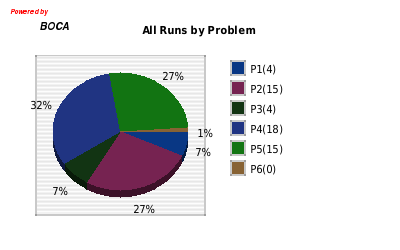
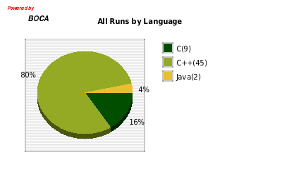
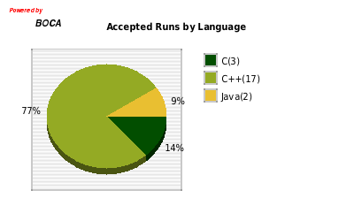
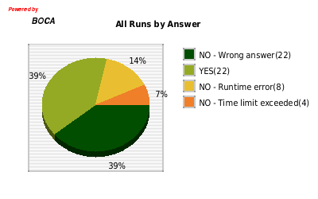

| Desafio Tecsinapse - Site |
| Problems | Total | Accepted |
| P1 | 4 | 3 (75%) |
| P2 | 15 | 7 (47%) |
| P3 | 4 | 1 (25%) |
| P4 | 18 | 5 (28%) |
| P5 | 15 | 6 (40%) |
| P6 | 0 | 0 |
|  |  |
| Problems x Answers | NO - Runtime error | NO - Time limit exceeded | NO - Wrong answer | YES | Total |
| P1 | 0 | 1 (25%) | 0 | 3 (75%) | 4 |
| P2 | 2 (13%) | 0 | 6 (40%) | 7 (47%) | 15 |
| P3 | 0 | 2 (50%) | 1 (25%) | 1 (25%) | 4 |
| P4 | 6 (33%) | 0 | 7 (39%) | 5 (28%) | 18 |
| P5 | 0 | 1 (7%) | 8 (53%) | 6 (40%) | 15 |
| P6 | 0 | 0 | 0 | 0 | 0 |
| Problems x Languages | C | C++ | Java | Total |
| P1 | 0 | 4 (100%) | 0 | 4 |
| P2 | 2 (13%) | 13 (87%) | 0 | 15 |
| P3 | 0 | 4 (100%) | 0 | 4 |
| P4 | 0 | 18 (100%) | 0 | 18 |
| P5 | 7 (47%) | 6 (40%) | 2 (13%) | 15 |
| P6 | 0 | 0 | 0 | 0 |
| Languages | Total | Accepted |
| C | 9 | 3 (33%) |
| C++ | 45 | 17 (38%) |
| Java | 2 | 2 (100%) |
|  |  |
| Languages x Answers | NO - Runtime error | NO - Time limit exceeded | NO - Wrong answer | YES | Total |
| C | 1 (11%) | 0 | 5 (56%) | 3 (33%) | 9 |
| C++ | 7 (16%) | 4 (9%) | 17 (38%) | 17 (38%) | 45 |
| Java | 0 | 0 | 0 | 2 (100%) | 2 |
|  |
| Users x Problems | P1 | P2 | P3 | P4 | P5 | P6 | Total | Accepted |
| I am Root | 1 (5%) | 2 (10%) | 1 (5%) | 16 (76%) | 1 (5%) | 0 | 21 | 10 (48%) |
| Sua mãe | 2 (22%) | 1 (11%) | 2 (22%) | 2 (22%) | 2 (22%) | 0 | 9 | 3 (33%) |
| Menos cúbico | 0 | 7 (78%) | 0 | 0 | 2 (22%) | 0 | 9 | 2 (22%) |
| Filhos de Turing | 0 | 2 (33%) | 0 | 0 | 4 (67%) | 0 | 6 | 2 (33%) |
| include Poli | 1 (25%) | 1 (25%) | 1 (25%) | 0 | 1 (25%) | 0 | 4 | 3 (75%) |
| BalloonSort | 0 | 2 (29%) | 0 | 0 | 5 (71%) | 0 | 7 | 2 (29%) |